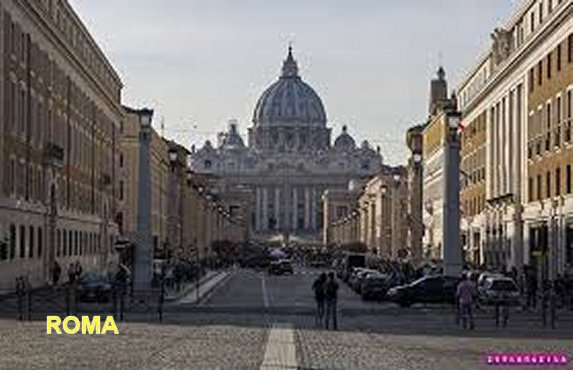
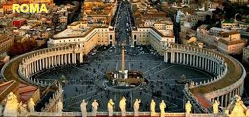

=“POBREZA E REVOLTA”=
O VIDENTE

Bruno Cornacchiola nasceu em Roma no dia 9 de maio de 1913. Seus pais eram muito simples e pobre, com pouquíssima instrução e sem qualquer conhecimento espiritual. Sua mãe, forçada pela necessidade, trabalhava fora de casa, e assim, não pode se dedicar à educação dos seus filhos. O pai não trabalhava, estava quase sempre embriagado entregue totalmente ao vício da bebida. E o pior, tinha o hábito de bater nos filhos, mesmo não havendo o menor motivo. Bruno de tanto apanhar, decidiu abandonar a casa dos pais. Aos 14 anos de idade saiu de casa pela manhã e não voltou mais, procurou abrigo numa das cavernas existentes nas proximidades de Roma e assim passou a sua existência longe dos pais, vivendo como um menino de rua, “um vagabundo” ,segundo a expressão usada por ele mesmo.
O próprio Bruno conta a sua história:
Eu tinha o habito de viajar de trem, mas não gostava de pagar a passagem, porque tinha pouco dinheiro ou quase nenhum, e por isso me ocultava embaixo dos assentos, ou em qualquer outra parte do vagão, fugindo do cobrador das passagens, que passando ligeiro a fim de recolher os valores de todos, não conseguia me localizar.
Também não tinha um trabalho fixo, porque vivendo revoltado com a existência, não realizava os trabalhos com muita atenção e os cuidados necessários, por essa razão, eu era logo despedido. Na realidade estava vivendo mais de serviços esporádicos.
O CASAMENTO
Com a idade de 23 anos decidi a me casar com Iolanda Lo Gatto, uma jovem pobre, mas honesta e lutadora, que buscava através do trabalho uma melhor condição de vida. Tivemos três filhos: Gianfranco, Carlo e Isola. Por outro lado, embora gostando da minha noiva, não queria me casar, mas para não deixá-la magoada, concordei em celebrar a cerimônia do casamento na Sacristia da Igreja, com a presença somente do Sacerdote e um auxiliar.
Em 1936 entrei na convocação para a guerra civil na Espanha, me apresentando como voluntário, naturalmente atraído pela possibilidade de ganhar um bom dinheiro, e lá permaneci durante três anos. Entre as amizades que consegui havia um soldado alemão, um revoltado protestante, que odiava o Papa e a Igreja Católica. E aqueles conselhos terríveis do meu amigo alemão, ficaram gravados no meu espírito. Com o término da guerra, regressando ao lar, embora com saudades da família, estava com um abominável ódio condensado no meu coração; comprei uma adaga em Toledo e nela gravei: "Morte ao Papa”.Significando que também havia assumido o ódio do amigo alemão: pela Igreja Católica, pelos Padres e pelo Papa.
Assim, retornei ao lar em 1939, com a mente doente, totalmente impregnada pelo maligno. Ao invés de me preocupar somente com a esposa, com o bem estar dela e dos nossos filhos, pensava numa maneira “de salvar a humanidade”, destruindo a Igreja Católica, matando todos os Padres e esfaqueando o Papa. E a época era um tempo difícil aqui na Europa, pois já se desenhava no horizonte em cores bem vermelhas, os lampejos da Segunda Grande Guerra Mundial. Por isso mesmo, só depois de muita procura consegui emprego de “Controlador” na Empresa de Bondes que servia Roma. Mas com a mente completamente transformada pelas novas idéias, quis convencer a esposa de abandonar a fé católica, contando-lhe as histórias incríveis que ouvi do amigo alemão.
VIDA VAZIA E SEM FÉ

Ele consentiu e assim, o casal recebeu a Eucaristia durante nove meses, na primeira sexta-feira de cada mês. Mas Bruno não se descontraía, não se mantinha dentro da normalidade. Sério, fechado em seu ódio contra os padres, se mantinha com a mesma opinião e com o mesmo comportamento. E desse modo, as nove comunhões que ele recebeu não funcionaram para decidir o caminho a ser seguido, em virtude da ausência total de um coração aberto ao amor. Participaram das Missas, receberam a SAGRADA EUCARISTIA, mas sem aquele desejo amoroso sincero e apaixonado. Então, também não aconteceu nada visivelmente na vida do casal. Apenas para evitar atritos, a esposa delicadamente concordou que o teste não tinha dado certo, e por isso, aceitava ir com ele para o protestantismo.
Esclarecimento - Apesar da infidelidade humana que trata com frieza, tibieza, irreverências, sacrilégios e desprezo as coisas de DEUS, NOSSO SENHOR JESUS CRISTO, misericórdia infinita, querendo salvar a humanidade pecadora, abriu mais um amplo e precioso caminho para a conversão de todos os corações empedernidos, para que eles buscassem e cultivassem uma sincera santidade. Com esse objetivo instituiu as “12 Promessas do SAGRADO CORAÇÃO DE JESUS”, que ELE transmitiu a Santa Margarida Maria de Alacoque, afim de ser difundida aos cristãos do mundo. Então Bruno e sua esposa Iolanda, buscando solucionar a escolha de qual dos dois Credos (Católico ou Protestante) deviam professar, se comprometeram a cumprir o item nº 12 da Grande Promessa do SAGRADO CORAÇÃO DE JESUS que diz: “A todos que comungarem na primeira sexta-feira de nove meses seguidos, darei a Graça da Perseverança Final e da Salvação Eterna”. E sempre exercitando a SUA Infinita Bondade, JESUS com incalculável misericórdia e paciência, aceitou as orações e comunhões feitas, em benefício do próprio casal, mas não quis definir a escolha do Credo que eles deviam professar. Isso foi confirmado posteriormente por NOSSA SENHORA durante a Aparição.
Bruno continuou a falar sobre os fatos da sua vida...